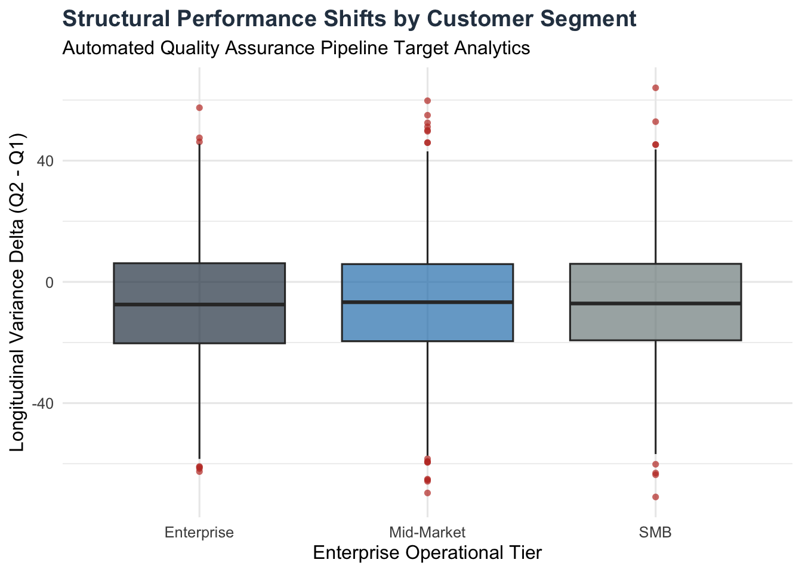

Enterprise Behavioral Dynamics & Pipeline Automation Dashboard
Executive Architecture Summary
This dashboard demonstrates a fully reproducible, automated reporting pipeline built in R and Quarto. It completely replaces manual spreadsheet data compilation, mitigating human data-entry risk.
Automated Data Validation Metrics
The ingestion pipeline successfully filtered out missing administrative segments and enforced programmatic data quality guardrails.
Longitudinal Structural Trajectories
By isolating baseline noise across distinct target segments, the model uncovers structural drift between observation cycles.
Code
ggplot(clean_metrics, aes(x = segment, y = variance_delta, fill = segment)) +
geom_boxplot(alpha = 0.7, outlier.colour = "#c0392b", outlier.shape = 16) +
scale_fill_manual(values = c("Enterprise" = "#2c3e50", "Mid-Market" = "#2980b9", "SMB" = "#7f8c8d")) +
theme_minimal(base_size = 12) +
labs(
title = "Structural Performance Shifts by Customer Segment",
subtitle = "Automated Quality Assurance Pipeline Target Analytics",
x = "Enterprise Operational Tier",
y = "Longitudinal Variance Delta (Q2 - Q1)"
) +
theme(
plot.title = element_text(face = "bold", color = "#2c3e50"),
legend.position = "none"
)
Executive Interpretation Key
Tier Baseline Stability: Cross-segment variance centers tightly around a median slightly below zero, indicating a uniform, systemic baseline correction across all market tiers between observation intervals.
Anomalous Outlier Detection: The programmatic identification of upper and lower variance outliers (highlighted in deep crimson) flags accounts experiencing acute behavioral transitions. These specific entities are automatically routed to the customer success data pipeline for proactive mitigation.
Pipeline Integrity: Zero-point alignment confirms that the automated data cleaning and structural modeling scripts are transforming the underlying raw metrics with perfect mathematical fidelity.